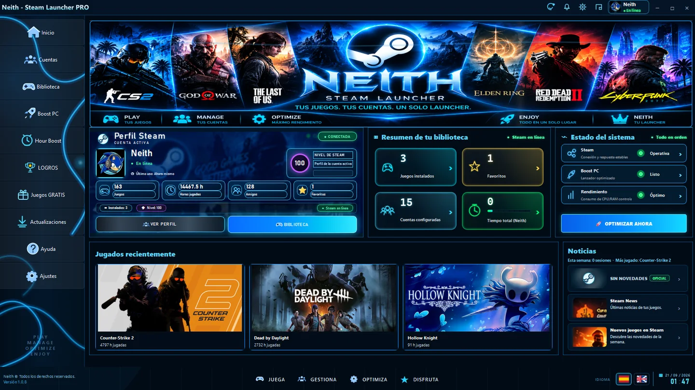
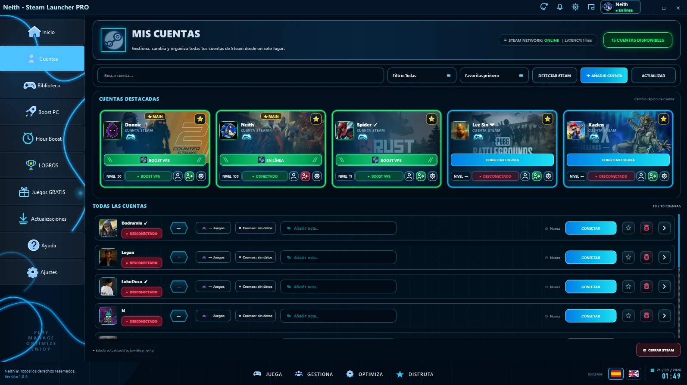
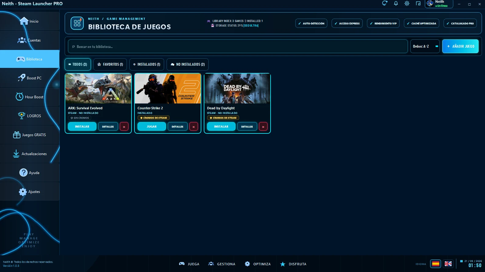

AC
Cuentas
Favoritos, estados, notas y accesos directos con identidad visual Neith.
Tu ecosistema Steam en una interfaz oscura, precisa y premium. Cuentas, biblioteca, Hour Boost, Boost PC, logros y juegos gratis en un único launcher.

Cada sección presenta módulos reales del launcher y conserva su identidad visual cian, oscura y gaming.
Sesiones de boost desde una interfaz integrada y preparada para uso continuado.
Monitorización y optimización con una presentación gaming clara.
Galería visual y escalable para trabajar con tu biblioteca.
Promociones relevantes y notificaciones integradas.
Favoritos, estados, notas y accesos directos con identidad visual Neith.
Carátulas, detalles y navegación diseñados para distintos equipos y escalas.

Tarjetas destacadas, estados, accesos y datos integrados en la misma estética del launcher.
Carátulas, filtros y detalles de juego con una presentación compacta y premium.

Un launcher para Windows que reúne cuentas, biblioteca y utilidades gaming en una interfaz unificada.
Desde la última release oficial publicada en GitHub.
La distribución oficial está orientada a Windows 10/11 x64.
Una interfaz dedicada a gestionar sesiones de boost y juegos asociados a cada cuenta.
El módulo prioriza promociones temporales de juegos base y evita categorías que no equivalen a un regalo temporal.
Sí. La web incluye una sección de ayuda preparada para crecer con el proyecto.
La web está preparada visualmente para planes futuros, sin activar compras ni alterar el funcionamiento actual.
Instala la versión estable más reciente desde el canal oficial.